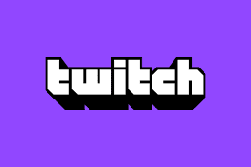

قبل 8 أشهر خرج كل من الستريمرز الشهيرين نينجا وشراود من المنصة الشهيرة تويتش التابعة لشركة أمازون بسبب عرض جاء من منافس لتويتش وهو موقع ميكسر التابع لشركة مايكروسوفت . فدفع لنينجا وشراود ملايين الدولارات , قبل اسبوعين لم تستطع شركة مايكروسوفت أن تعقد صفقات مع ستريمرز جدد فقامت ببيع موقعها الى شركة فيسبوك التي بدورها قامت بنقل جميع إمكانات ميكسر الى فيسبوك قيمنق , وذلك لم يعجب الكثيرين حيث أن هناك الكثير والكثير من الستريمرز لديهم الاف المتابعين خسروهم في لحظة بسبب شراء فيسبوك لميكسر . حيث أن هؤلاء الستريمرز سيبدؤون من الصفر مجددا .

